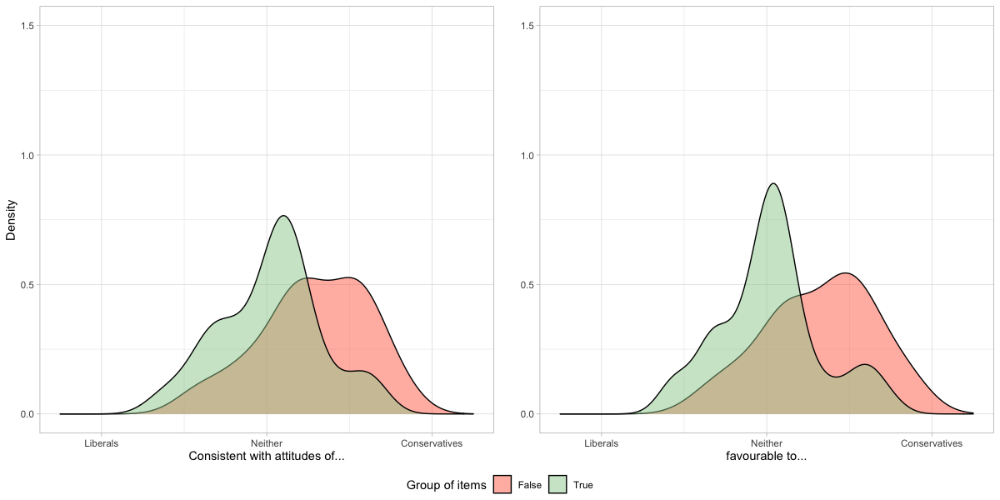
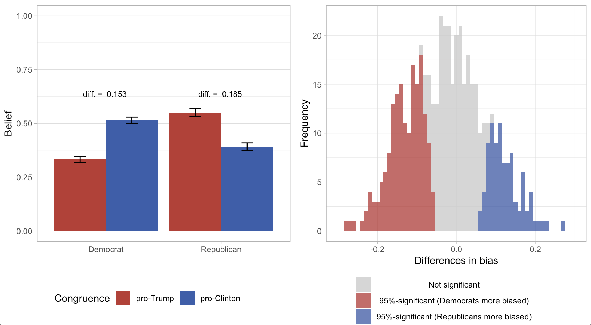

My first area of resarch concerns people's factual beliefs about politics and how they seek out, evaluate, remember and disseminate factual information and news. Related to this, I study how the characteristics of news sources and media trust shape these processes. Secondly, I am interested in the genetic sources of political behaviour. Thirdly, my current project at the University of Amsterdam revolves around the effects of media exposure on political and social polarization. I study these questions with data from online experiments, surveys, social media and trace data, using both conventional social-science statistics as well as machine learning methods. Further, I enjoy improving practices of open science and data visualization.
Work in progress
"Common genetic sources of political ideology and religiosity" with Chris Dawes (NYU): Previous studies have shown the contribution of genes to both religiosity and ideology. But do these two traits have common genetic sources? We explore this question with the German TwinLife data set that contains genetic information as well as measures of political orientations and religiosity.
Media exposure and polarization with Magdalena Wojcieszak (UC Davis) and others: This project builds on a three-wave panel survey in three countries (US, Poland, the Netherlands) as well as participants' browsing behaviour in-between the surveys. The panel structure of the data and the browsing data allows us to test causal effects of media exposure on a variety of outcomes, such as perceived polarization or attitude extremity. | Preregistration
"Does Source Credibility Moderate Persuasion? New Evidence from a Longitudinal Experiment" with Andy Guess (Princeton): Early scholarship in psychology proposed the idea that persuasion hinges on source credibility. However, existing studies almost universally take source credibility as given. We create a hypothetical news outlet and manipulate whether subjects see it as trustworthy, and later test whether this boosts persuasion. The graphs below show that the effect of credibility on persuasion is small, but persists over a week. | Preregistration
"Shareworthiness, source credibility and congruence" with Paul Bauer (MZES University of Mannheim): In this paper, we explore two factors that could influence people's news sharing behaviour: the credibility of the source and whether the content is congruent with a someone's attitudes. We find that congruence matters; sources make little difference, not even attenuating the bias towards sharing congruent content.
Thompson sampling in survey research: Adaptive experimentation, e.g. Thompson sampling, solves the "multiarmed bandit problem": You want to know which option yields the highest payoffs. But instead of trying all options the same number of times, you aim to try the best option more often than others. I argue that in pre-testing stimuli for experimental research, we're often in a similar situation: We would like to know which of several stimuli is the "best" option. Conventionally, we test all options the same number of times first, and choose one option for our later study. In this project, I explore how adaptive experimentation can make pre-testing superfluous.
Papers
"Believing and Sharing Information by Fake Sources: An Experiment", with Paul Bauer (MZES University of Mannheim), Political Communication, 2020
Paper |
Preregistration |
Replication code

Pre-registration | Working paper | Replication code

"Truth and Bias: Robust findings?", under reviewWorking paper | Replication code

"Assimilation bias and source credibility in the processing of news" under reviewWorking paper | Replication code
"Micro Influence and Macro Dynamics of Opinion Formation", with Michael Mäs (University of Groningen) and Bary Pradelski (CNRS/Grenoble)
Working paper
"Do theories of European integration shed some light on a possible disintegration?"
Working paper